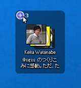

TwitterやFacebook上の友達をアイコンにしてデスクトップに置けるクライアントソフトです。
気になるあの人の近況をウィンドウを開くことなく一目でチェックでき、タイムラインに埋もれてしまうこともありません。
「人間軸で見る」「邪魔にならない」「アイコン風のシンプルな操作」をコンセプトにしています。
JavaScriptが無効、もしくはFlashのバージョンが低いためダウンロードできません。
JavaScriptを有効にするか、もしくは最新のFlashをインストールして下さい。
←の「Install Now」をクリックすると Adobe AIR および最新のソーシャル顔アイコンをまとめてインストールできます。
Windows、Mac OS X、Linuxで動作します。
※詳細
github.com にてソースコードを公開しています。
アイコン同士をくっつけるとまとまります。
さらに左上の「―」ボタンを押すと、アイコンを重ねてコンパクトに。

画面端の専用Dockにアイコンを入れておけば、画面端にカーソルを動かすだけですぐに様子をチェックできます。